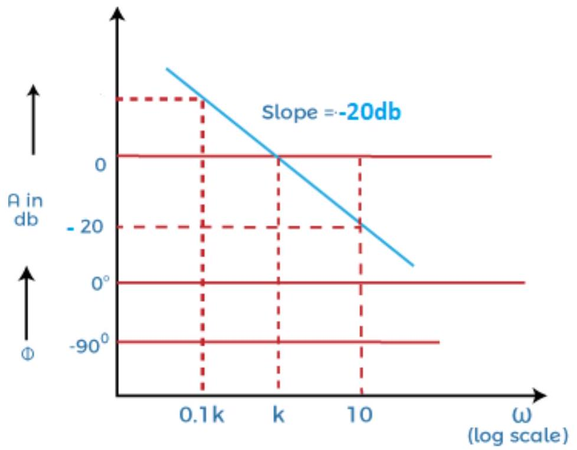
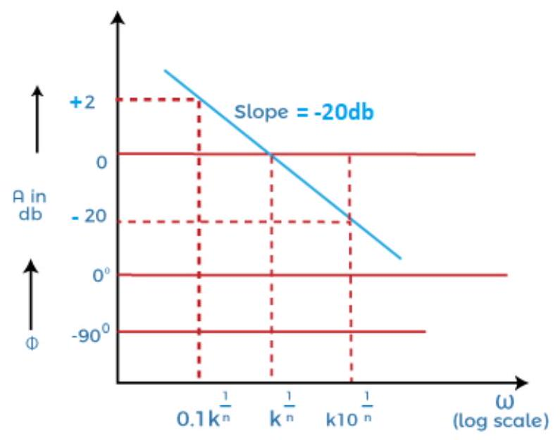
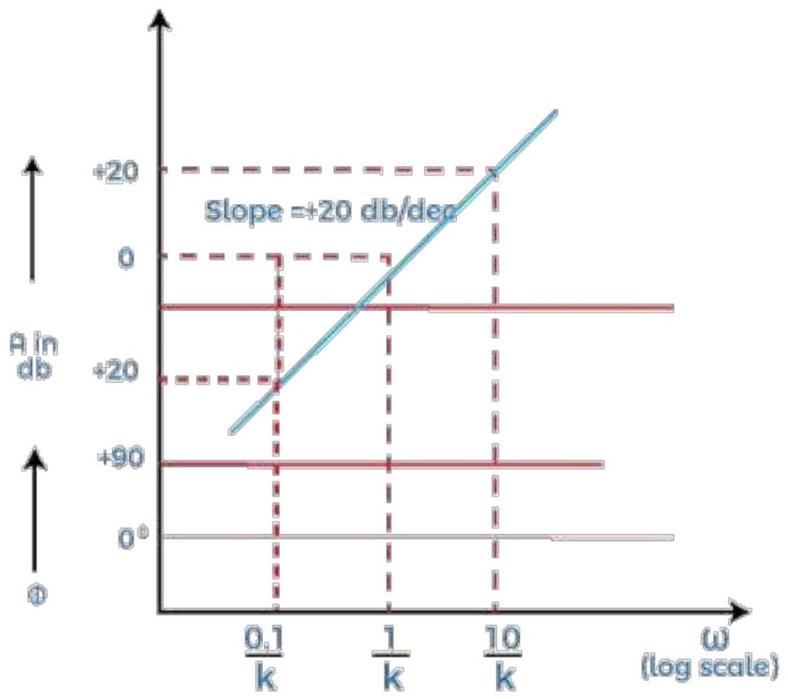
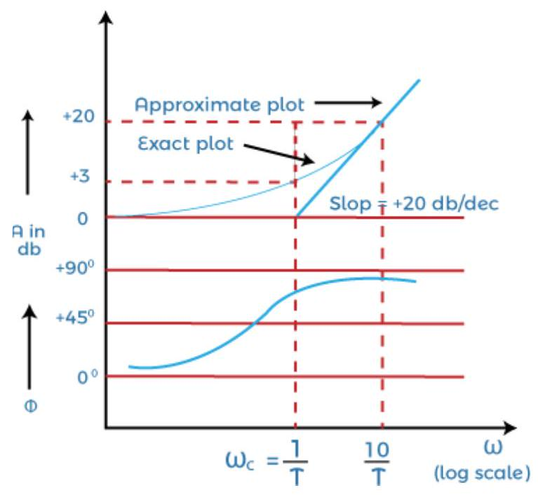
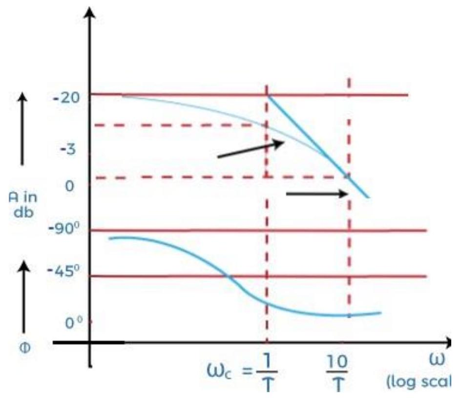
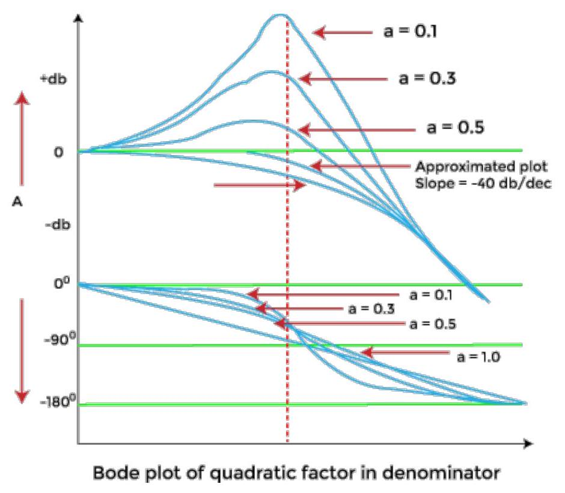

Unit-8: Frequency-Response Analysis & Bode Plot
Bode plot
It is a frequency response plot that contains two graphs, magnitude and phase. The first plot is the magnitude plot of sinusoidal transfer function versus log $\omega$, and the other graph represents the phase angle. It can be drawn both for the open-loop and closed-loop system. It is generally drawn for the open-loop system because it conveniently determines the stability and other related parameters.
Bode plot helps us determine the system's stability and provides us with a way to improve that stability. The standard representation of the Bode plot of the open-loop system is given by:
Magnitude Plot
It represents the logarithmic magnitude of the function $G(s)$ or $G(j\omega)$. Here, the base of logarithmic is 10. The unit represents the magnitude of the logarithmic function $G(j\omega)$ in decibels or db. The curve is not drawn on a simple graph paper; and instead, it is drawn on the semilog paper that uses the frequency, phase angle, and magnitude for plotting. The log scale or abscissa is used for the frequency, and the linear scale or ordinate for the phase angle and magnitude.
The logarithmic function allows the various values in the forms of multiple to be added. For example,
$\log ab = \log a + \log b$
Thus, the bode plot has an advantage of converting the multiplication of magnitudes in addition. For example,
Let $G(j\omega) = K / [j\omega (1 + j\omega T)]$
The magnitude of $G(j\omega)$ is $K/[\omega \sqrt{(1 + \omega^2 T^2)}]$
The phase angle of $G(j\omega)$ is $-90^\circ - \tan^{-1}(\omega T)$
The magnitude in the form of decibels can be expressed as:
We have inserted the negative sign due to the inverse of the logarithmic value.
It means that $\log (1/a)$ can be written as $\log (a)^{-1}$, which is equal to $-\log a$.
Thus, the above equation depicts that the magnitude when expressed in terms of db. It can easily convert the multiplicative terms to add, meaning that the individual factors of the given transfer function can be added. We will also discuss an example to draw a bode plot later in the topic.
Bode Plot Factors
Constant gain K in Bode plot
The constant gain is represented by K. It is also known as the system gain in case of root locus and transfer functions.
Let, $G(s) = K$
$G(s) = G(j\omega) = K$
The angle assumed for the constant gain is 0 degrees.
In terms of decibels, we can represent the system gain as:
If the value of K is negative, the angle thus will be 180 degrees.
At the magnitude of the $20\log K$, the magnitude of constant gain K will be a horizontal straight line.
There are three range of K.
- K > 1
- K = 1
- 0 < K < 1
When the value of K is greater than 1, $20\log K$ is positive.
When the value of K is 1, $20\log K$ is zero. It is because the value of $\log 1$ is 0.
When the value of K is greater than 0 and less than 1, $20\log K$ is negative.
Integral factor in Bode plot
Both the integral factor and the derivative factor affect the slope of the magnitude curve. Let's first discuss the integral factor in the Bode plot.
Let the integral factor be $K / j\omega$. The integral factor is represented by constant gain divided by the s, and it can be of one order or more.
$G(s) = K/s$
$G(j\omega) = K / j\omega$
Its magnitude and phase angles are $K/\omega$ and -90 degrees.
Its gain in decibels $= A = |G(j\omega)| = 20\log (K/\omega)$
When $\omega = 0.1 K$, $A = 20\log (K/0.1K) = 20\log (10) = 20$ db
It is because the value of $\log 10$ is 1.
When $\omega = K$, $A = 20\log (K/K) = 20\log (1) = 0$ db
When $\omega = 10 K$, $A = 20\log (K/10K) = 20\log (10)^{-1} = -20$ db
It is because the value of $\log a^{-n}$ is $-n \log a$.
From the above analysis for different values of $\omega$, we can find the magnitude of the integral factor. It will be a straight line with a slope of -20 db/decade. It will also pass through 0 db, when the value of $\omega$ is K.
The plot of an integral factor $K/ j\omega$ is shown below:
Let's consider another example of an integral factor in the multiples of n. It is given by:
$G(s) = K/s^n$
$G(j\omega) = K/ (j\omega)^n$
Its magnitude and phase angle are $K/\omega^n$ and -90n degrees.
Its gain in decibels $= A = |G(j\omega)| = 20\log (K/\omega^n)$
The plot of an integral factor in the multiples of n is shown below:
Derivative factor in the Bode plot
The derivative factor consists of the terms containing s in the numerator itself. Let's consider a derivative factor represented by $K j\omega$.
$G(s) = Ks = K j\omega$
Its magnitude and phase angles are $K\omega$ and 90 degrees.
It is because the term $j\omega$ is in the numerator. Thus, the angle will be in positive degrees.
Its gain in decibels $= A = |G(j\omega)| = 20\log (K\omega)$
When $\omega = 0.1/K$, $A = 20\log (K \times 0.1/K) = 20\log (0.1) = 20\log (10)^{-1} = -20$ db
It is because the value of $\log a^{-n}$ is $-n \log a$.
When $\omega = 1/K$, $A = 20\log (K/K) = 20\log (1) = 0$ db
When $\omega = 10/ K$, $A = 20\log (K \times 10/ K) = 20\log (10) = 20$ db
The plot of the above derivative factor is shown below:
It is because the value of $\log 10$ is 1.
From the above analysis for different values of $\omega$, we can find the magnitude of the derivative factor. It will be a straight line with a slope of +20 db/decade. It will also pass through 0 db, when the value of $\omega$ is 1/K.
Let's consider another example of a derivative factor in the multiples of n. It is given by:
$G(s) = Ks^n$
$G(j\omega) = K(j\omega)^n$
Its magnitude and phase angle are $K\omega^n$ and 90n degrees.
Its gain in decibels $= A = |G(j\omega)| = 20\log (K\omega^n)$
Let's discuss the first order factors in numerator and denominator of the transfer function.
First order factor in the numerator
The first order factor in the numerator or a derivative factor is given by:
$G(s) = 1 + sT$
$G(j\omega) = 1 + j\omega T$
$|G(j\omega)| = \sqrt{1 + \omega^2 T^2}$
Angle $= \tan^{-1}(\omega T)$
The gain in decibels is given by:
The value of gain at very low frequencies ($\omega \ll 1/T$) will be equal to $10 \log 1 = 0$ dB.
The value of gain at high frequencies ($\omega \gg 1/T$) will be equal to $10 \log (\omega^2 T^2) = 20 \log (\omega T)$.
The Bode plot for the first order function given above is shown below:
We have approximated the magnitude of the plot in two straight lines. The first line is a straight horizontal line with very low frequencies (0 db), while the other slanting slope refers to the high frequencies ($20 \log \omega T$). It would have a slope of +20db/decade.
The two straight lines are the asymptotes of the exact curve. The frequency at which these two asymptotes meet is known as the corner frequency, and it is also known as break frequency.
For the above-given function, the corner frequency will arise when $\omega = 1/T$. The phase angle will vary from 0 degrees to 90 degrees with frequency variation between zero and infinity.
The magnitude approximated at the corner frequency is around + 3dB, and it is generally considered the loss in db at this corner frequency.
First order factor in the denominator
The first order factor in the denominator or an integral factor is given by:
$G(s) = 1/(1 + sT)$
$G(j\omega) = 1/ (1 + j\omega T)$
$|G(j\omega)| = 1/ \sqrt{1 + \omega^2 T^2}$
Angle $= -\tan^{-1}(\omega T)$
The gain in decibels is given by:
It is because the value of $\log a^{-n}$ is $-n \log a$.
The value of gain at very low frequencies ($\omega \ll 1/T$) will be equal to $-10 \log 1 = 0$ dB.
The value of gain at high frequencies ($\omega \gg 1/T$) will be equal to $-10 \log (\omega^2 T^2) = -20 \log (\omega T)$.
The Bode plot for the first order function given above is shown below:
We have approximated the magnitude of the plot in two straight lines. The first line is a straight horizontal line with the very low frequencies (0 db), while the other slanting slope refers to the high frequencies ($-20 \log \omega T$). It would have a slope of -20db/decade.
Note: The derivative factor in the transfer function generally represents to the positive slope, while the integral factor represents the negative slope in the bode plot.
The two straight lines are the asymptotes of the exact curve.
For the above-given function, the corner frequency will arise when $\omega = 1/T$. The corner frequency divides the curve of the Bode plot into two regions, i.e., low frequency and high frequency. The phase angle will vary from 0 degrees to -90 degrees with frequency variation between zero and infinity.
The magnitude approximated at the corner frequency is around - 3dB, and it is generally considered the loss in db at this corner frequency. Note: The two curves in the Bode plot is the magnitude curve and the phase angle curve. The first curve that represents the value in decibels represents the magnitude curve, while the second curve represents the phase angle curve.
Quadratic factor in the denominator
It is the essential part of the Bode plot to understand. It means the factor in the denominator in present in the form of quadratic equation.
Let's consider a quadratic equation, which is given by:
Where,
$\zeta$ is the damping ratio
$\omega_n$ is the natural frequency
We can write the above transfer function as:
Put, $s = j\omega$
The magnitude is given by:
The phase angle is given by:
Let's find the gain of the above transfer function in decibels.
$A = 20\log |G(j\omega)|$
The factor $G(j\omega)$ is present in the denominator. To bring it in numerator, we will insert a negative sign. It is because $\log (1/a)$ is equal to $-\log a$.
So, the gain will be:
Let's find the value of gain at different frequencies.
The value of gain at very low frequencies ($\omega\ll \omega_n$) is equal to:
$A \approx -10 \log [(1 - 0)^2 + 0] = -10 \log 1 = 0$ dB
The value of gain at very high frequencies ($\omega\gg \omega_n$) is equal to:
$A \approx -10 \log [( - (\omega / \omega_n)^2)^2] = -10 \log [(\omega / \omega_n)^4]$
At, $\omega= \omega_n$
The high frequency asymptote has a slope of -40 dB/decade.
Thus we can conclude that the magnitude plot of the quadratic factor can be approximated by two straight lines with a slope of 0 db/decade at low frequencies and -40 db/decade at high frequencies.
Let' find the value of angle $G(j\omega)$ at different values of frequency.
At, $\omega = \omega_n$
Angle $G(j\omega) = -\tan^{-1}(2\zeta/0)$. Since $1-(\omega/\omega_n)^2$ passes through 0, the angle jumps by $-180^\circ$ at $\omega_n$. Assuming $2\zeta\omega/\omega_n$ is positive, the angle approaches $-90^\circ$ from below and $-270^\circ$ from above $\omega_n$. The text simplification is common but overlooks the discontinuity.
Text states: Angle $G(j\omega) = -90$ degrees.
At $\omega = 0$, the value of angle is 0 degrees.
At $\omega = \infty$, the value of angle tends to $-180$ degrees.
The plot of the quadratic factor is denominator is shown below:
The two curves are independent of the damping ratio $\zeta$. The height of the resonant peak is inversely proportional to the damping ratio. It means that the decrease in the value of the damping ratio will increase the resonant peak.